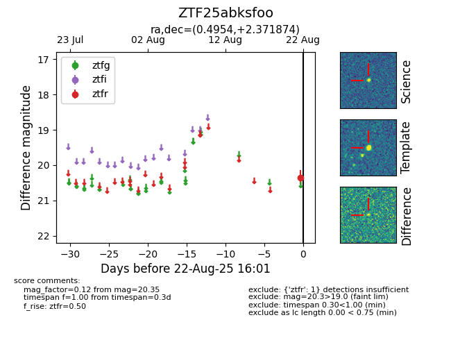

Target ZTF25abksfoo at 2025-08-27 09:17, see:
FINK: fink-portal.org/ZTF25abksfoo
Lasair: lasair-ztf.lsst.ac.uk/objects/ZTF25abksfoo
ALeRCE: alerce.online/object/ZTF25abksfoo
alt names
ZTF25abksfoo (ztf,fink)
coordinates:
equatorial (ra, dec) = (0.4953,+2.37193)
galactic (l, b) = (98.9912,-58.18228)
photometry
last ztfg=20.06, ztfr=20.14
1 ztfg, 3 ztfr detections
